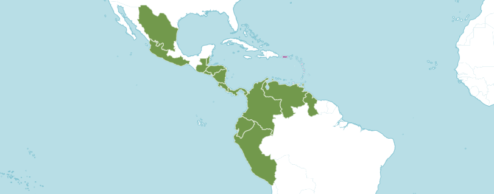

El Araguaney o Aravenei es originario de las selvas tropófilas de los llanos venezolanos, aunque se extiende a lo largo y ancho del país. Su nombre botánico es Handroanthus chrysanthus y la especie venezolana es Tebehuia Chrisantha, aunque se le conoce como guayacán, roble amarillo, cañahuate, zapatillo, zapito y tajibo (una variedad de él puede observarse desde México hasta Ecuador ).
Fue declarado Árbol Nacional de Venezuela el 29 de mayo de 1948 por el entonces presidente Rómulo Gallegos, quien identificaba este árbol con “la primavera de oro de los araguaneyes”. Lo acompañan como símbolos Nacionales de Venezuela el Turpial y la Orquídea.
El botánico Henri Pittier lo describió como un árbol de madera dura, compacta y pesada, de color rojizo moreno y de grano fino.

Caracteristicas
 Las semillas se propagan por vía aérea; crece en las sabanas, cerrosáridos o húmedos, suelos duros y secos, escasamente montañas muy altas y húmedas, y no crece en suelos pantanosos.
Las semillas se propagan por vía aérea; crece en las sabanas, cerrosáridos o húmedos, suelos duros y secos, escasamente montañas muy altas y húmedas, y no crece en suelos pantanosos.
| Altura | 6m ~ 12m |
|---|---|
| Grosor (diametro) |
≈ 60cm |
| Periodo de Florescencia |
Entre abril y mayo |
| Temperatura Ambiental |
18° ~ 23° |